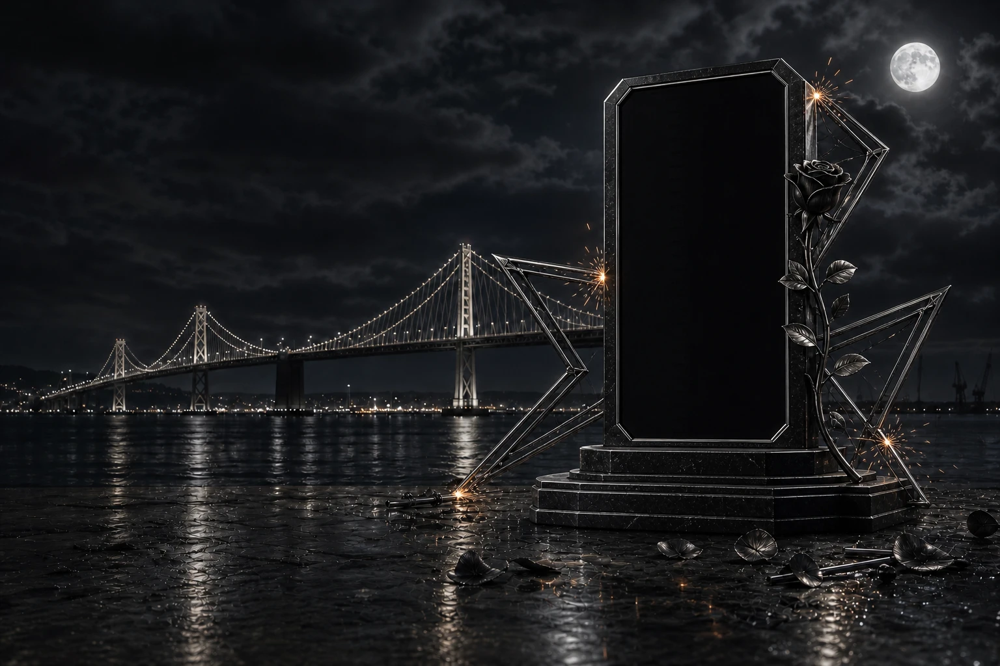

The rose remembers.
The real garment holds the first memory. Bridge light, rose steel, and unfinished star points rise around it.

The real garment holds the first memory. Bridge light, rose steel, and unfinished star points rise around it.